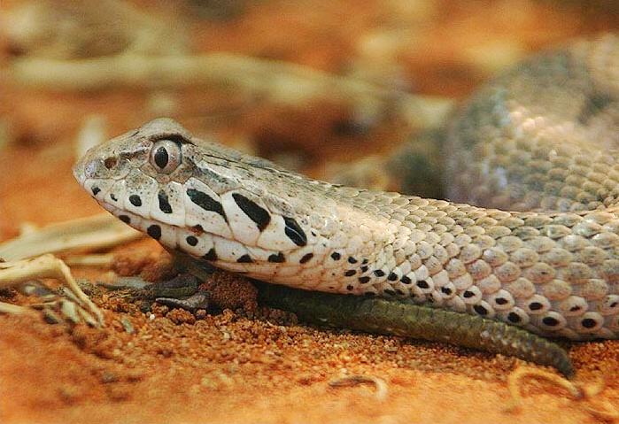
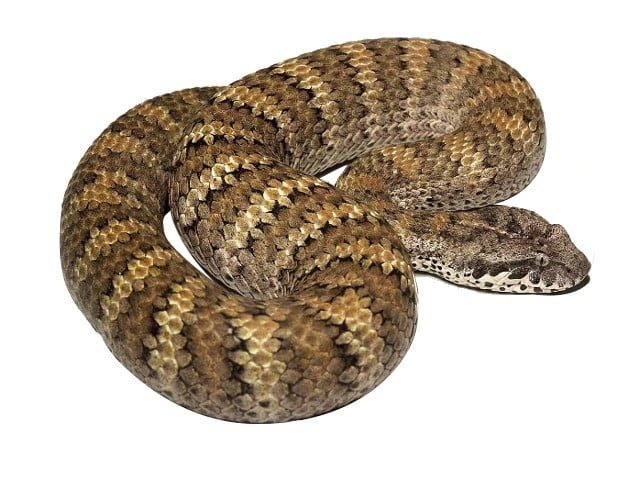

.jpg)

.jpg)
Common Death Adder
ชื่อวิทยาศาสตร์: Acanthophis antarcticus
ลักษณะทั่วไป
เป็นงูที่มีขนาดปานกลางค่อนไปทางเล็ก ไม่ยาวมากนัก ความยาวโดยเฉลี่ยของตัวโตเต็มวัยจะอยู่ที่ประมาณ 40 ถึง 70 เซนติเมตร แต่ในตัวผู้และตัวเมียที่มีขนาดใหญ่เป็นพิเศษ (โดยเฉพาะตัวเมียที่มักจะมีขนาดใหญ่กว่าตัวผู้) สามารถเจริญเติบโตได้ยาวสูงสุดถึง 70 ถึง 100 เซนติเมตร แม้ลำตัวจะไม่ยาวเท่ากับงูเห่าหรืองูจงอาง แต่กลับมีรูปร่างที่ หนา ป้อม และตัน อย่างมาก บริเวณกลางลำตัวจะขยายกว้างและอวบอิ่มอย่างเห็นได้ชัด ทำให้น้ำหนักตัวเมื่อเทียบกับความยาวนั้นถือว่าค่อนข้างหนักและมวลเยอะ รูปร่างที่เทอะทะนี้ช่วยให้มันสามารถกักเก็บพลังงานและซุ่มนิ่งอยู่กับที่ได้เป็นเวลานานโดยไม่ต้องเคลื่อนที่บ่อย ส่วนหัวของ Common Death Adder มีขนาดใหญ่ กว้าง และแบนราบ โดยขยายออกเป็นทรงสามเหลี่ยมด้านเท่าอย่างเห็นได้ชัดเจนบริเวณมุมปากและขากรรไกร ซึ่งเป็นลักษณะเฉพาะที่หายากในกลุ่มงูพิษเขี้ยวสั้น (Elapidae) บริเวณคอของมันจะมีความกว้างน้อยกว่าส่วนหัวอย่างเห็นได้ชัด ทำให้เกิดช่วง "คอดแคบ" แยกส่วนหัวออกจากลำตัวป้อมๆอย่างชัดเจน ดวงตามีขนาดเล็กและฝังอยู่ด้านข้างของหัว โดยมีแผ่นเกล็ดเหนือดวงตา (Supraocular scales) ยกตัวขึ้นเล็กน้อยคล้ายโหนกคิ้ว ทำให้หน้าตาดูดุร้าย รูม่านตาเป็นแนวตั้ง (Vertical pupil) ซึ่งเป็นวิวัฒนาการที่ช่วยในการมองเห็นและการกะระยะเหยื่อในสภาวะแสงน้อยหรือช่วงเวลากลางคืน เกล็ดบนลำตัวไม่ได้เรียบลื่นเหมือนงูเห่าทั่วไป แต่มีลักษณะเป็น สัน (Keeled scales) เล็กน้อย ทำให้ผิวสัมผัสของมันดูขรุขระ ไม่สะท้อนแสง และช่วยลดแสงสะท้อนเมื่อมันนอนซุ่มอยู่ใต้แสงแดด ทั่วทั้งลำตัวตั้งแต่หลังคอไปจนถึงโคนหาง จะมีลายแถบคาด (Crossbands) สลับสีเข้มและสีอ่อนเป็นริ้วๆ ตลอดแนว สีสันของ Common Death Adder มีความหลากหลายสูงมากคล้ายงูเห่าไทยจากพาร์ทก่อนๆ (Polymorphic) เพื่อให้กลมกลืนกับสภาพแวดล้อมที่มันอาศัยอยู่
- โทนสีน้ำตาล-แดง:พบมากในพื้นที่ดินแดงหรือป่าเต็งรัง
- โทนสีเทา-ดำ:พบในพื้นที่ป่าหินหรือบริเวณที่มีถ่านหินและเศษใบไม้เน่าเสีย
- โทนสีเหลือง-ครีม:พบในพื้นที่แห้งแล้งหรือทราย
บริเวณส่วนท้องจะมีเกล็ดสีขาวครีม สีชมพูอ่อน หรือสีส้มอ่อน มักมีจุดหรือรอยแต้มสีเทาและสีดำกระจายอยู่ประปราย เมื่อไล่ลำตัวที่ป้อมหนาลงมาจนถึงส่วนท้าย ลำตัวจะเรียวกิ่วลงอย่างกระทันหันไปสู่ส่วนหาง ปลายสุดของหางจะมีลักษณะพิเศษ คือเป็นติ่งเนื้อขนาดเล็กที่มีเกล็ดดัดแปลงให้มีลักษณะเหมือน หนอน หรือ ตัวอ่อนของแมลง ปลายหางมักจะมีสีที่แตกต่างจากลำตัวอย่างสิ้นเชิง เช่น สีเหลืองสด สีส้ม หรือสีดำสนิท ซึ่งเมื่อมันนอนหมกตัวใต้เศษใบไม้ มันจะชูเฉพาะปลายหางนี้ขึ้นมาแล้วกระดิกดุ๊กดิ๊กไปมา เพื่อหลอกล่อให้นก กิ้งก่า หรือสัตว์กัดฟันขนาดเล็กเข้าใจว่าเป็นอาหาร แล้วเดินเข้ามาให้มันฉกโจมตีในระยะเผาขน
1. นิสัยและพฤติกรรมประจำตัว
- ความอดทนและนิ่งสงบ: เป็นงูที่ใจเย็นและรักสงบอย่างมาก มันสามารถนอนนิ่งอยู่กับที่ได้เป็นเวลาหลายวันหรือนานนับสัปดาห์โดยไม่เคลื่อนย้ายไปไหน เพื่อรอให้เหยื่อเดินเข้ามาหาเอง
- กลยุทธ์การพรางตัว (Cryptic Camouflage): พฤติกรรมหลักคือการใช้ลำตัวขุดและสบัดเอาเศษทราย ฝุ่น หรือเศษใบไม้แห้งมาคลุมทับตัวเองไว้ เหลือไว้เพียงส่วนหัวส่วนบน ดวงตา และปลายหางที่โผล่ออกมาเล็กน้อยเท่านั้น
- ไม่เลื้อยหนีเมื่อเจออันตราย: งูทั่วไปมักจะเลื้อยหนีเมื่อรับรู้ถึงการมาของมนุษย์หรือสัตว์ขนาดใหญ่ แต่งูชนิดนี้ตัวอ้วน เลื้อยช้า อืดเป็นเต่า ทำให้อย่างมากที่สุดมันจะแค่นอนนิ่งไม่ขยับ (ซึ่งเป็นสาเหตุหลักที่ทำให้คนเดินป่าเผลอไปเหยียบและถูกกัด)
- การป้องกันตัว: หากถูกรบกวนหรือรู้สึกว่าถูกคุกคามอย่างหนัก มันจะ flatten (แบน) ลำตัวออกด้านข้างเพื่อให้ดูตัวใหญ่ขึ้น ขู่พ่นลม และพร้อมที่จะฉกโจมตีในทันทีโดยไม่มีการเตือนล่วงหน้า
2. พฤติกรรมการหากินและการล่อเหยื่อ (Caudal Luring)
- มัจจุราชไร้เงา: มันไม่ใช่ "นักสำรวจ" (Active Hunter) ที่จะเลื้อยตามหาเหยื่อแบบงูเห่า แต่มันคือนักฆ่าในเงามืด (Ambush Predator) ที่จะตั้งรับและใช้กลอุบายในการล่อเหยื่อแทน
- เทคนิคปลายหางล่อเหยื่อ: มันจะฝังตัวลงในเศษใบไม้และชูเฉพาะปลายหางที่มีสีต่างจากลำตัว (เหลือง ครีม หรือดำ) ขึ้นมา กระดิกปลายหางไปมารูปแบบเป็นจังหวะ คล้ายกับการดิ้นของหนอนหรือตัวหนอนแมลง สัตว์ที่เป็นเหยื่อเมื่อเห็นปลายหางดิ้นอยู่ จะเข้าใจผิดว่าเป็นอาหาร และเลื้อยหรือเดินเข้ามาใกล้เพื่อจะกินหนอนตัวนั้น เสี้ยววินาทีที่เหยื่อเข้ามาในระยะสังหาร เปรี้ยง!! Game over
3. ความเร็วในการฉกอันเป็นเอกลักษณ์
- ฉกเร็วที่สุดในบรรดางูพิษ: มันได้รับการบันทึกว่าเป็นงูที่ฉกเหยื่อได้เร็วที่สุดในโลก
- สถิติเวลา: กระบวนการทั้งหมดตั้งแต่การกางปาก พุ่งฉก ปล่อยพิษ และถอยกลับมาอยู่ในท่าเดิม ใช้เวลาเพียง น้อยกว่า 0.15 วินาที (เร็วกว่าการกระพริบตาของมนุษย์)
4. รายการอาหารหลัก (Diet)
อาหารของ Common Death Adder จะเปลี่ยนไปตามช่วงวัยและขนาดของลำตัว
- งูวัยอ่อน (Juveniles): ล่าสัตว์เลื้อยคลานขนาดเล็ก เช่น กิ้งก่า จิ้งจก และสัตว์ครึ่งบกครึ่งน้ำขนาดเล็ก (กบ/อึ่งอ่าง) เนื่องจากปลายหางสีสว่างของมันได้ผลดีมากในการล่อสัตว์กลุ่มนี้
- งูโตเต็มวัย (Adults): เน้นล่าสัตว์เลี้ยงลูกด้วยนมขนาดเล็ก (หนูพุก, หนูหริ่ง, หนูถุง) และนกที่หากินตามพื้นดิน รวมถึงสัตว์เลื้อยคลานขนาดใหญ่ขึ้น
- ถิ่นอาศัย: กระจายพันธุ์อยู่เป็นหลักในทวีปออสเตรเลีย โดยพบได้หนาแน่นทางฝั่งตะวันออกและฝั่งใต้ ทั้งรัฐควีนส์แลนด์ (Queensland), รัฐนิวเซาท์เวลส์ (New South Wales) รัฐวิกตอเรีย (Victoria), รัฐเซาท์ออสเตรเลีย (South Australia) และตอนใต้ของรัฐเวสเทิร์นออสเตรเลีย (Western Australia) ทั้งยังพบได้ในภูมิภาคปาปัวของประเทศปาปัวนิวกินี งูชนิดนี้ปรับตัวให้เข้ากับสภาพแวดล้อมได้หลากหลายประเภท แต่ปัจจัยสำคัญที่สุดคือการมี สิ่งปกคลุมพื้นดิน (Ground Cover) ที่หนาแน่นสำหรับการซุ่มซ่อนตัว อาทิ ป่าโปร่งและป่ายูคาลิปตัส (Woodlands & Eucalypt Forests) ป่าฝนและป่าดิบชื้น (Rainforests & Coastal Forests) ทุ่งหญ้าและป่าพุ่มไม้แห้ง (Grasslands, Heathlands & Scrublands) พื้นที่หินและเนินทราย เป็นต้น
- พิษ: พิษของ Common Death Adder (Acanthophis antarcticus) ได้รับการจัดอันดับให้เป็นหนึ่งในพิษงูที่ร้ายแรงที่สุดในโลก (อันดับที่ 10) พิษของงูชนิดนี้ประกอบด้วยสารชีวภาพที่ทำลายระบบประสาทเป็นหลักเรียกว่า Post-synaptic Neurotoxins (พิษทำลายระบบประสาทหลังตัวรับสัญญาณ) และมีกลไกการออกฤทธิ์ที่รวดเร็วอย่างมาก สารพิษจะเข้าไปจับกับตัวรับอะเซทิลโคลีน (Acetylcholine receptors) บริเวณจุดประสานประสาทและกล้ามเนื้อ (Neuromuscular junction) แบบย้อนกลับไม่ได้ (Irreversible) ขัดขวางไม่ให้กระแสประสาทส่งสัญญาณไปยังกล้ามเนื้อได้ ส่งผลให้กล้ามเนื้อทั่วร่างกายเกิดอาการ อ่อนแรงและอัมพาต ปริมาณพิษในการกัดหนึ่งครั้งโดยเฉลี่ยอยู่ที่ 40–50 มิลลิกรัม (ซึ่งเพียงพอที่จะสังหารมนุษย์โตเต็มวัยได้) หากถูกกัดและได้รับพิษ อาการจะพัฒนาอย่างรวดเร็ว โดยมักเริ่มปรากฏภายใน 15 ถึง 60 นาที หลังเกิดเหตุ
- ระยะแรก (15–30 นาที): ปวดและชาร้อนบริเวณบาดแผล (แต่แผลภายนอกมักมีอาการบวมแดงเพียงเล็กน้อย ต่างจากงูแมวเซา) รู้สึกง่วงซึม ปวดศีรษะ คลื่นไส้ อาเจียน และคลำพบต่อมน้ำเหลืองใกล้เคียงบวมโต
- ระยะกลาง (1–3 ชั่วโมง): หนังตาตก มองภาพซ้อน ซึ่งเป็นสัญญาณแรกของพิษทำลายระบบประสาท กล้ามเนื้อใบหน้าอัมพาต พูดไม่ชัด กลืนลำบาก น้ำลายไหล แขนขาเริ่มอ่อนแรง ควบคุมการเคลื่อนไหวไม่ได้
- ระยะรุนแรง (> 3 ชั่วโมง): กล้ามเนื้อกะบังลมและกล้ามเนื้อช่วยหายใจอัมพาตสมบูรณ์ ระบบหายใจล้มเหลว (Respiratory failure) และตาย
- ระดับความอันตราย: อันตราย ☠☠☠☠: พิษเป็นประเภท Post-synaptic Neurotoxin ออกฤทธิ์สกัดกั้นการทำงานของกล้ามเนื้อโดยตรง หากไม่ได้รับเซรุ่มแก้พิษ อัตราการเสียชีวิตสูงถึง 50–60% จากภาวะกล้ามเนื้อกะบังลมอัมพาตและระบบหายใจล้มเหลว ต่างจากงูพิษส่วนใหญ่ที่จะเลื้อยหนีเมื่อรับรู้ถึงแรงสั่นสะเทือน งูชนิดนี้มันอ้วน เลื้อยช้า ทำให้มันเลือกที่จะนอนนิ่งไม่ขยับ พฤติกรรมการนอนหมกตัวใต้เศษใบไม้หรือทรายบวกกับการนอนนิ่ง ทำให้ผู้คนที่เดินป่ามีโอกาสก้าวไปเหยียบตัวมันโดยไม่ตั้งใจและถูกกัดทันที ระยะเวลาในการฉกและถอยกลับใช้เวลาน้อยกว่า 0.15 วินาที ทำให้คนที่เผลอไปเข้าใกล้ไม่สามารถเอี้ยวตัวหรือหลบได้ทันอย่างแน่นอน
- อะไรเอ่ยไม่เข้าพวก: แม้จะอยู่ในวงศ์ Elapidae แต่ Common Death Adder กลับเลือกที่จะแตกต่าง ลำตัวอ้วนสั้น หัวเป็นรูปสามเหลี่ยม เขี้ยวยาวแบบบานพับ ล่าเหยื่อด้วยการดักตุ๋ย ต่างจากชาวบ้านชาวช่องเค้าที่ตัวเรียว หัวมนทู่ เขี้ยวสั้นแต่คมเหมื่อนมีดผ่าตัด และใช้วิธีไล่จับกับเหยื่อ
- ชื่อไม่ได้มาจาก "ความตาย" (Death): ในยุคแรกเริ่มที่ชาวยุโรปย้ายเข้ามาตั้งรกรากในออสเตรเลีย พวกเขาเรียกมันว่า "Deaf Adder" (งูหูหนวก) เพราะมันไม่เลื้อยหนีเวลาคนเดินผ่าน แตกต่างจากงูชนิดอื่น แต่ต่อมาชื่อนี้ถูกเรียกเพี้ยนไปเรื่อยๆ จนกลายเป็น "Death Adder" (งูมัจจุราช) เนื่องจากพิษอันร้ายแรงของมัน
- คางคกลูบคม: แม้จะเป็นนักล่าพิษร้ายแรงระดับโลก แต่ประชากรของมันกลับลดลงอย่างน่าใจหายจากการเข้ามาของคางคกอ้อย (สายพันธุ์รุกราน) เพราะงูชนิดนี้มองว่าคางคกเคลื่อนไหวช้าและจับง่าย จึงใช้หางล่อมากิน แล้วก็เจอเข้ากับสารพิษ Bufotoxin บนผิวหนังของคางคกอ้อยที่ส่งงูกลับดาวแทบจะในทันทีหลังกลืนลงไป